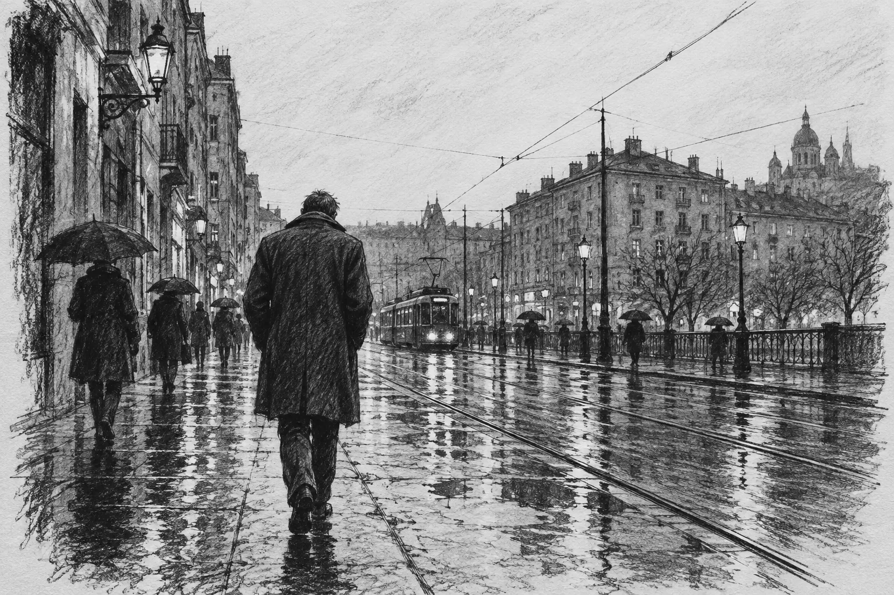
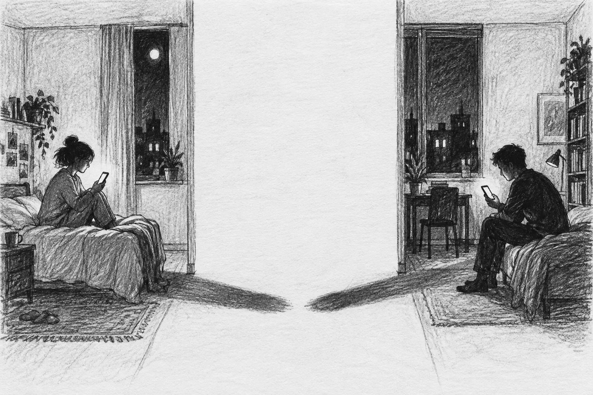
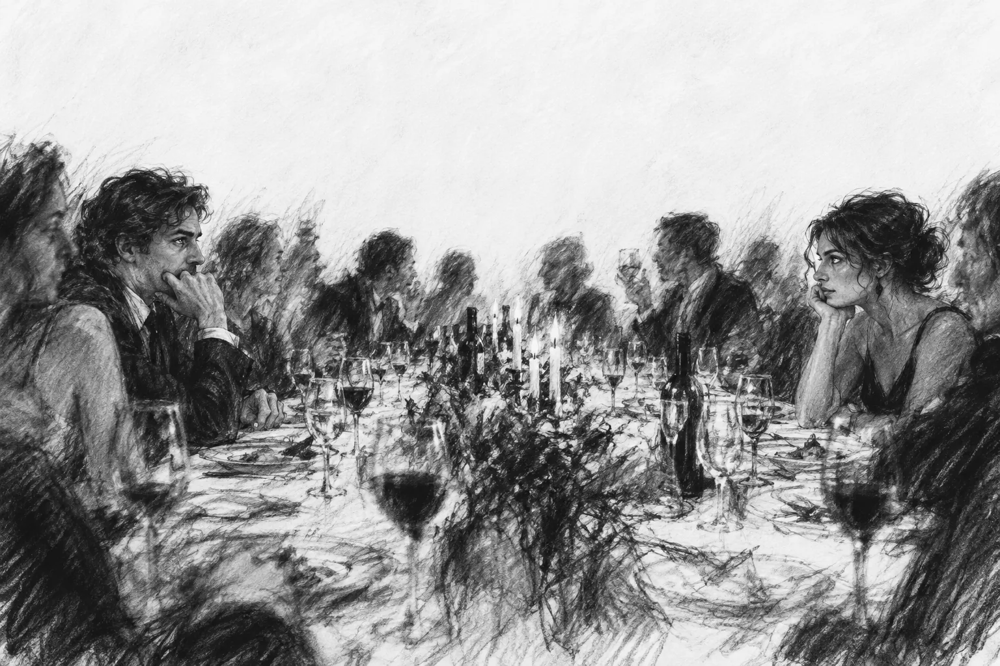

Stories & poems / 01—03
Writings.
Three works, collected in one place.
Words and black & white sketches.
Choose where to begin.

Parallelism.
Three late-night conversations, two voices, and all that remains between them.
Enter their world
Torments.
Impossibility, Hurt, Holding Hands, and Geometry: four poems from one period of life.
Read the poems